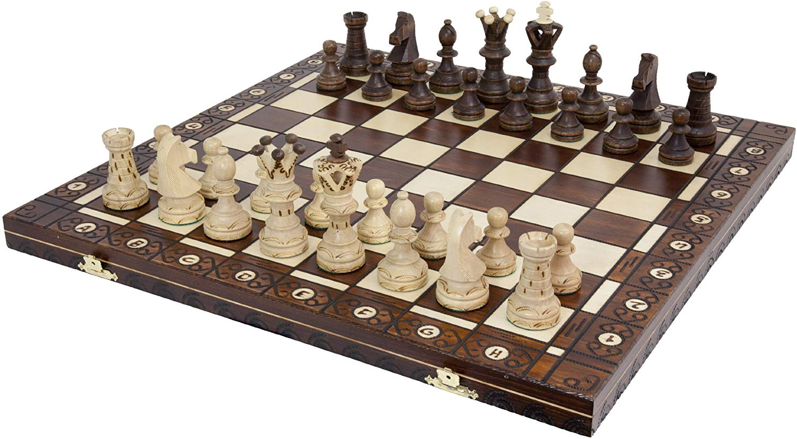
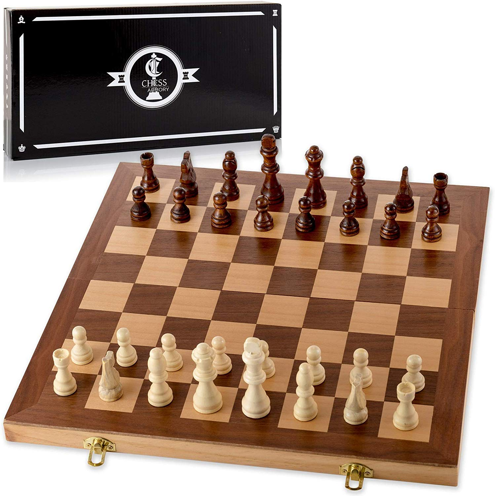
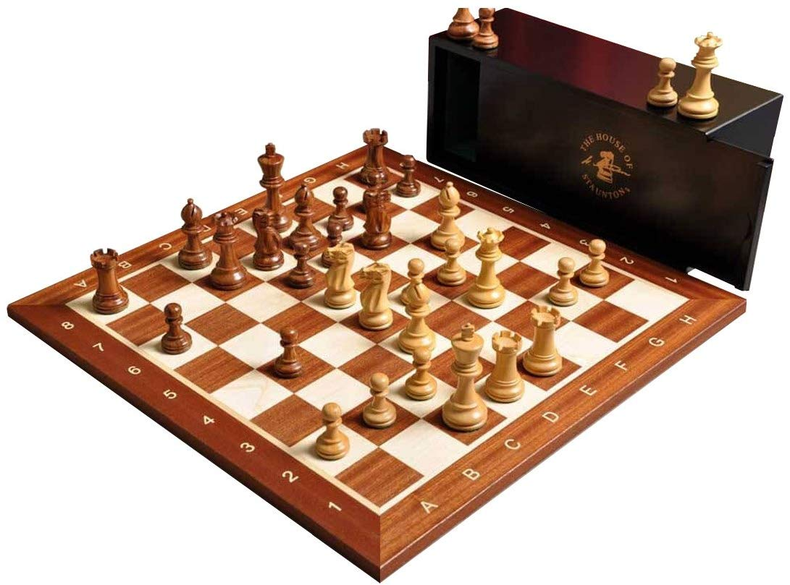

Buying a chess set
If you would prefer the feel of playing a physical chess set, here are some links to purchase some great sets to get started! Click the images to be directed to the Amazon page for the corresponding chess set
Wegiel Ambassador Chess Set
The board is made from beech and birch wood that gives it a classic, handmade feel that many chess enthusiasts will appreciate; number and letter algebraic coordinates adorn the borders. Handcrafted chessmen are felt bottom and weighted; they are made from hornbeam and sycamore wood.
Chess Armory Chess Set
Large 15" x 15" folding chess board for easy game play. Quality wooden chess set with inlaid walnut. Felted interior with straps for storing pieces
Wegiel Ambassador Chess Set
The Chess pieces are hand carved by our master artisans and crafted out of the highest grade woods. The Chess pieces are heavily weighted with luxurious billiard cloth base pads and a beautiful finish. These Chessmen have been designed for those players looking for exceptionally well-crafted wooden Chessmen. Designed by the Maestro, it is without a doubt the most attractive yet durable set available on the market at this price point. We at the House of Staunton understand that not everyone can afford one of our luxury Chess sets, so we proudly offer the Grandmaster Series Chessmen for your consideration - High-quality wooden Chessmen! The Wooden Tournament Mahogany / Maple Chessboard with 1.75" Squares features Mahogany (dark) and Maple (light) squares with a Mahogany frame. This veneered Chessboard is 0.5" thick and has a satin finish with the House of Staunton logo silkscreened on the H1 square.